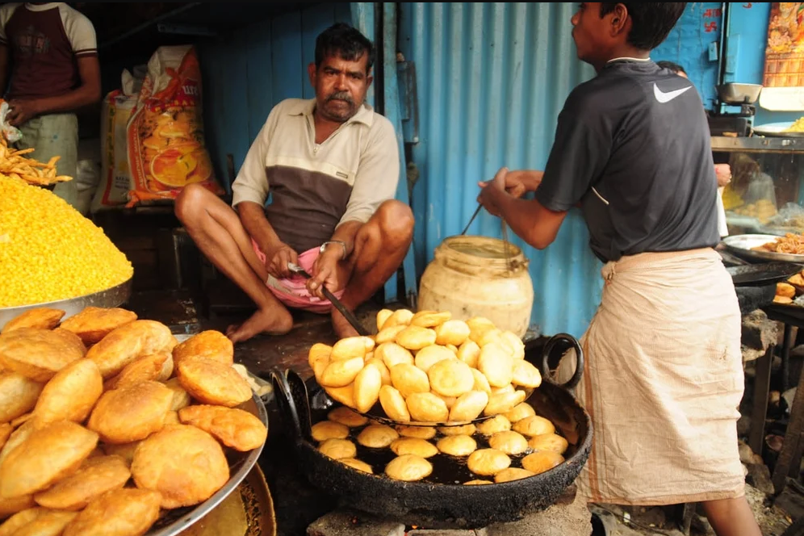
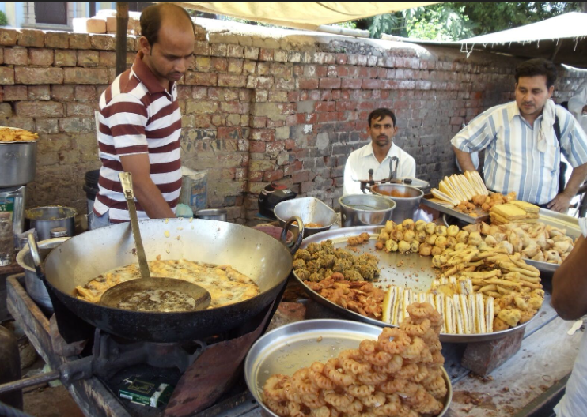
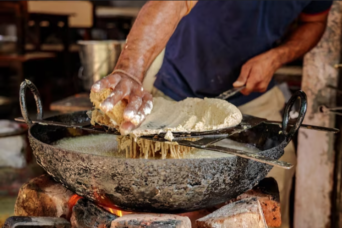
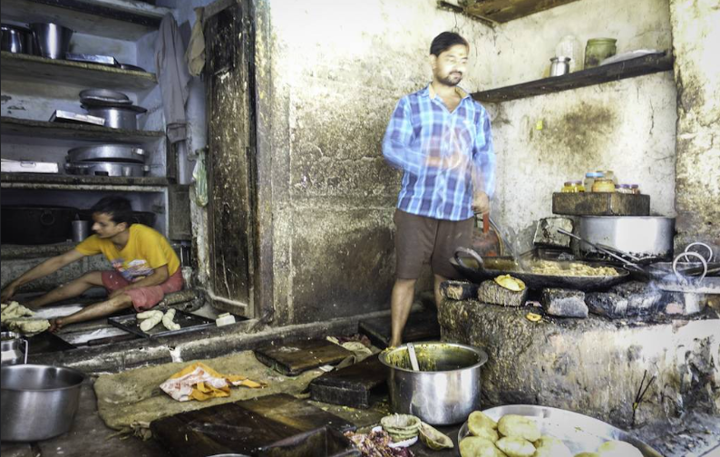

   CONHEÇA A FABULOSA E ESTUPEIDA CULINÁRIA INDIANA
A culinária Indiana auxilia o funcionamento intestinal, se você tem dificuldades com a culinaria brasileira a base de trigo e óleo de soja, a comida indina vai ser um alívio por dias ao seu sistema digestivo.
Não esqueça de levar na sua mala de viajem comprimidos de carvão para qualquer improvável problema.
Veja esta receita escolhida com a mão bem higienizada.
Você pode acessar este Video útil no youtube
Será uma experiência única e talvez a última da sua vida.